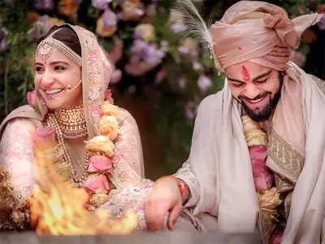

Virat and Anushka

26 jan 2019

Virat and Anushka journey from strangers to life partners is a heartwarming tale of modern love facilitated by Shaadi.com. Their story is a testament to how digital platforms can bridge distances and create connections that lead to lifelong commitments. Shubham, a Government Banker from Bangalore , was initially skeptical about online matrimonial platforms. However, after much persuasion from his family, he decided to create a profile on Shaadi.com. His primary goal was to find someone who shared his values and ambitions. Shruti, a Civil Engineering Professor from Moradabad , was also new to online matchmaking. With a busy career and limited time for socializing, she turned to Shaadi.com, hoping to meet someone who could understand her professional drive and complement her personality. It wasn’t long before Shubham came across Shruti profile. Her interests in travel, reading, and her career-oriented mindset immediately caught his attention. He sent her a thoughtful message, and to his delight, Shruti responded positively. They soon began chatting, discovering shared interests and values. Their first meeting was a blend of excitement and nervousness. However, any apprehension quickly faded as they found themselves laughing and enjoying each other’s company. The chemistry was undeniable, and both felt they had found someone truly special. Shubham and Shruti’s conversations grew deeper. They discussed their aspirations, family values, and what they envisioned for their future. Shubham and Shruti’s wedding will be a celebration of love, bringing together friends and family from both sides. Their journey, which began on Shaadi.com, culminated in a beautiful ceremony, symbolizing the start of their new life together. Shubham and Shruti’s story is a beautiful example of how Shaadi.com helps people find their perfect match. From initial skepticism to finding true love, their journey showcases the platform’s ability to connect like-minded individuals and create lasting relationships. Today, Shubham and Shruti are excited about their future together, grateful for the platform that brought them
"Shaadi.com Team congratulates Anushka & virat. We wish you both a happy future."